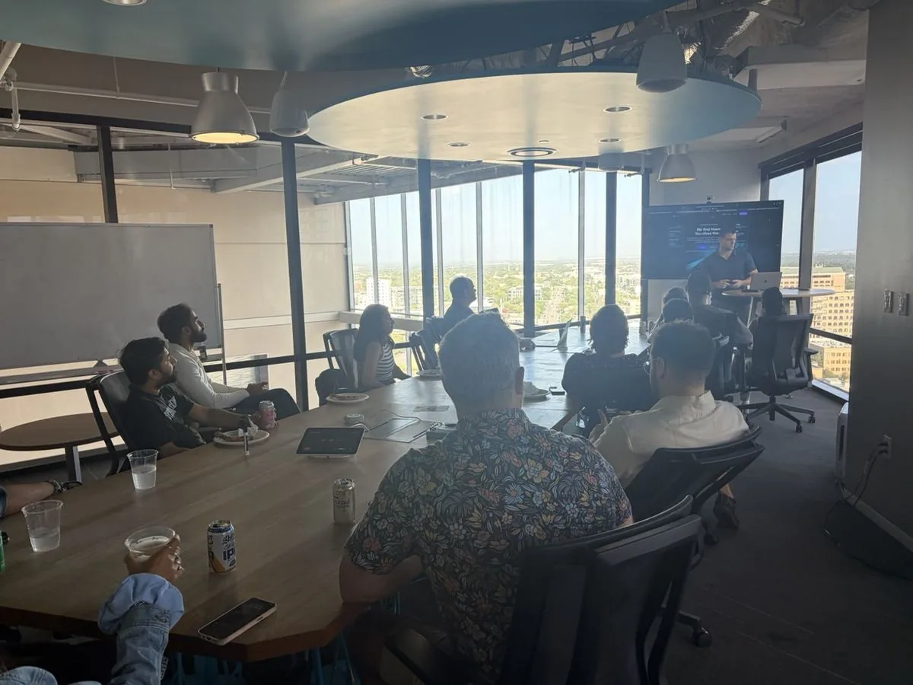
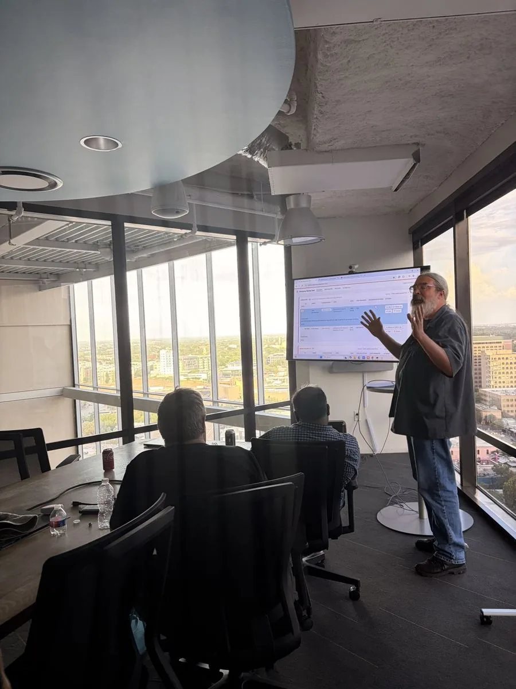
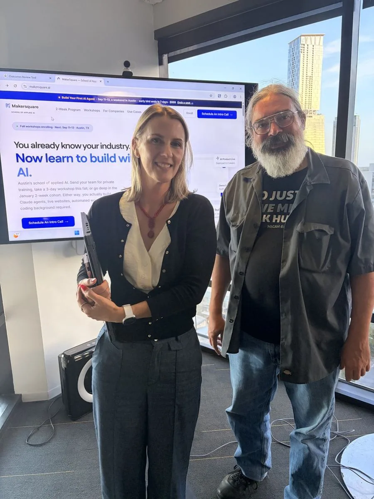

What non-technical professionals built in a 2-week AI bootcamp.
Everyone who comes to MakerSquare brings one real problem from their own work. Two weeks later they demo a working tool at a public Demo Day in Austin. Here are four of those tools: who built them, what they do, and how each one is put together.
The builders came from sales, a job search, homeless services and construction. We describe each build the way it actually shipped, including the parts that still need a human to say yes.
Cohort 1 · July 6–17, 2026Cohort 2 · August 3–14, 2026In person, Austin TX
Sales · Cohort 1
Cameron Dowd built an AI prospecting agent that drafts outreach into Gmail
Cameron DowdSaaS account executive
The problem
A good cold email starts with research: what the company does, what changed lately, and why they would care now. Done properly, that takes hours a week. Skipped, the email reads like everyone else’s.
What he built
A web app where Cameron adds a target account. An agent researches the company, the result lands as a row on his kanban board, and a personalized email waits in his Gmail drafts. He reads it and decides whether to send.
How it’s put together
Website and board: a site on Vercel with a kanban board that reads and writes a Supabase table of the accounts he is actually working.
A research Skill: deployed as its own small web service. Give it a company name and it returns six fields: industry, size range, growth signals, hiring status, tech-stack hints and recent news.
The agent: calls that Skill and web search until it has all six fields plus two buying triggers. It stops after four tool calls, so a run can’t wander off.
Gmail through Composio: the output is a draft. Sending stays Cameron’s decision.

Cameron demoing his build at Cohort 1 Demo Day, July 17, 2026.
“The most valuable part was building the base — then taking that base to build the agent.”
Ted Kilgore built JobFit, an agent that shortlists 30 best-fit companies from a resume
Ted KilgoreBuilt it for his own job search
The problem
A job search rewards aim, and most job tools reward volume. Ted wanted a short list of companies that fit his background and were actually hiring, so his time went to the right 30 instead of 300.
What he built
JobFit. Ted enters his resume, a target role and a location, then clicks Generate Shortlist. The agent fills a kanban board with 30 companies, each with a reason it fits and a link to a real hiring signal.
How it’s put together
Website and board: a site on Vercel with a Supabase table of target companies behind the kanban.
A matching Skill: deployed as a web service. Each call returns five ranked companies with a size estimate, location match, hiring signal and fit rationale.
The agent: runs the Skill six times from six different search angles to reach 30 unique companies, with a cap of 20 tool calls.
“The jump from simple chatting to programmatic engagement always seemed beyond my reach — but after only 10 days, MakerSquare has helped me over that mountain.”
Chris Cox built a case-manager dashboard and an email-to-record agent for a homeless shelter
Chris CoxDirector of System Performance, Hesed House
The problem
Information about shelter guests arrives in email. Getting each update into the right guest’s record is manual work, and case managers need one place to see where every guest stands.
What he built
A dashboard that puts guest records in one view, and an agent that reads incoming email, pulls out a structured record, matches it to the right guest and adds it to the dashboard. When the agent isn’t sure which guest an email is about, it flags the record for a person to confirm.
How it’s put together
De-identified data only: shelter records hold regulated personal information, so during the program real names never went to a free-tier cloud service or to an AI model. Chris built and tested everything on de-identified records.
Dashboard: a Supabase database behind a site deployed on Vercel.
Gmail through Composio: read and draft permissions only. The agent can’t send or delete anything.
What came next: he finished early and left with plans for two more agents, a weekly digest of grants the shelter qualifies for and a finder for voucher-friendly housing.

Chris walking the room through his dashboard, Cohort 2.
“The biggest win isn’t what I built — it’s what I can do going forward. There’s nothing they could hand me that I couldn’t build a solution for.”
Chris Cox, Cohort 2
Construction project management · Cohort 2
Jennifer Francis built an agent that files every RFI and submittal email
Jennifer FrancisConstruction & facilities project manager
The problem
On a construction project, RFIs and submittals arrive by email all day. Each one meant four manual steps: download the file, rename it to the naming convention, save it in the right folder, and retype the details into the project hub.
What she built
An Outlook agent that does all four. It reads the email, downloads the file, renames it to her convention (a name like Project_RFI_0123_2026-08-13.pdf), saves it, decides whether it is an RFI or a submittal, and logs the record to the matching hub marked “needs confirm.”
How it’s put together
Outlook through Composio: she built and demoed it on a test Outlook account. The pipeline is the same one a work inbox would run.
What it pulls from each email: item ID, project, description, responsible party, date received and due date, plus the spec division for submittals.
Nothing goes out: the agent never sends or forwards. Every record waits for Jennifer’s quick confirm.

Jennifer and Chris, Cohort 2, August 14, 2026.
“I could take a real-world problem, build a solution for it, and do it in two weeks — something that felt unfathomable before.”
Jennifer Francis, Cohort 2
Public reviews
Two more graduates, in their own words
These come from reviews posted on Course Report, quoted as written.
“One of the biggest takeaways was learning a terminal-first workflow that lets me stay much more LLM agnostic.”
Rohan runs a marketing agency that produces a high volume of content for itself and its clients. In his words, model quality varies across the writing and editing steps, “so being able to switch between them without rebuilding the workflow is valuable.” He left with a plan for an agentic content engine he intends to build out.
Rohan K. Founder & CEO, Austin marketing agency · 2-week program, Cohort 2 Course Report, August 27, 2026
“Ravi opened up categories that we hadn’t considered and helped us learn tools to actually get an application up and running, along with several agents.”
Tony took our 3-day workshop, Build Your First AI Agent, in September 2026. He went in worried it would be slides read aloud and wrote that it “definitely felt like an advanced course.”
Tony Perez 3-day workshop, September 11–13, 2026 Course Report, September 25, 2026
How the builds work
One build pattern, pointed at four different jobs
A sales agent, a job-search agent, a shelter dashboard and a construction inbox agent look like four different products. Underneath, all four were built in the same order, with the same tools, in the same two weeks. That order is how we teach people to build AI agents.
Week 1 · Wednesday
A live website
Built in plain English with Claude Code, pushed to GitHub, deployed on Vercel. Everyone has a public URL by the end of the day.
Week 1 · Thursday–Friday
A database and a first Skill
A Supabase table wired to the site, and a Claude Skill that does the one judgment call the tool depends on. Product 1 ships Friday.
Week 2
The agent
It fetches its own input through Composio (Gmail, Outlook), uses the Skill to decide, writes results back to the database, and can run on a schedule with GitHub Actions.
Week 2 · Friday
Demo Day
A short live demo in front of a public Austin audience, then certificates.
What the four builds have in common
A person approves the last step. Cameron’s agent writes drafts. Chris’s flags uncertain matches. Jennifer’s marks every record “needs confirm.”
Least-privilege connections. The agents can read and draft. None of them can send or delete on their own.
The problem came from the builder’s own week. Each one is a task the builder did by hand, often, before the program.
No. The program is built for professionals without a coding background. You describe what you want in plain English and Claude Code writes the code.
What will I build?
A tool for a problem from your own work. In the pre-work you define that problem and what “solved” looks like, and gather real inputs from your job, so the website, database and agent you build all point at it.
When and where is the next cohort?
Cohort 3 starts January 11, 2027, in person at Capital Factory in downtown Austin, 9am to 3pm, Monday to Friday. Enrollment closes January 4. Tuition is $3,999. The program page has the details.
Bring your own problem. Cohort 3 starts Jan 11.
Two weeks, in person in Austin, with an instructor beside you while you build. Tell us what you would build on a short intro call.
Grab a time that works and tell us about your goals. It's a relaxed intro call with our team — we walk you through the program and help you figure out if it's the right fit. No prep needed.